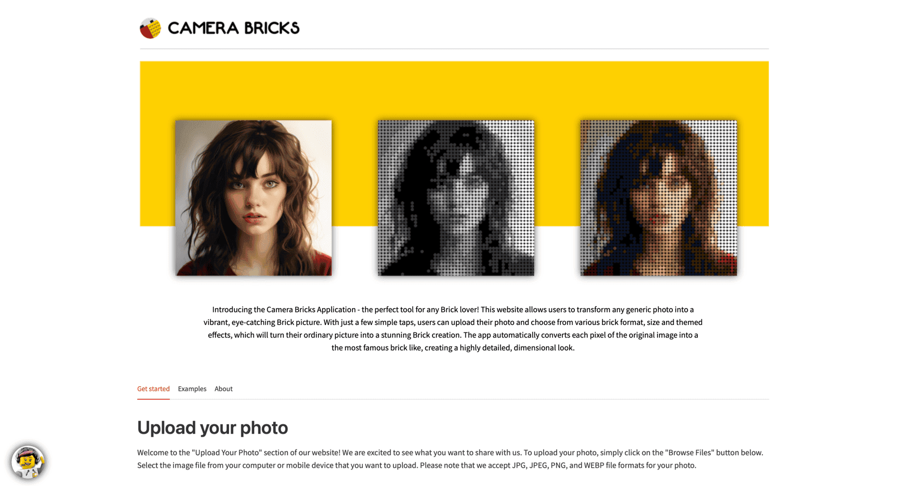

Camera Bricks
Transform any generic photo into a vibrant, eye-catching Brick picture.
Python
Streamlit
OpenCV
Docker
Transform any generic photo into a vibrant, eye-catching Brick picture.
Camera Bricks turns any photo into brick art. Upload an image, pick a brick shape, a level of detail and a colour palette, and the app rebuilds the picture as a mosaic of rendered studs, ready to download as a framed polaroid-style print.
What makes the result read as plastic rather than as large pixels is the texture: each colour is applied onto a real photograph of a brick, so the highlights and shadows of every stud survive and the mosaic looks like a physical build.
It runs as a single web app, with the whole interface and the imaging code in the same codebase.

Round or square studs, raised or flat, with a 3D preview of the selected brick next to the control. Three detail levels — 24, 48 or 96 bricks across — trade the chunky look of a small build against the fidelity of a large one, and the result is labelled with its brick count, a useful estimate of how large a real build would be.
The photo is first resized to a fixed working width and cropped to an exact multiple of the brick grid, so there are no partial bricks at the edges. Each cell is reduced to its average colour, matched to the closest colour of the chosen palette using a perceptual weighting, and rendered onto the brick texture. The tiles are composed into a large canvas and wrapped in a polaroid frame stamped with the logo.
Holds the whole application: page layout and flow, plus the imaging helpers for cropping, colour matching, brick colourisation, framing and download.
Provides the entire interface — file uploader, the brick / size / palette selectors, tabbed navigation, spinners and download buttons — from the same Python file as the logic.
NumPy carries the pixel work: block averaging, the tinting of the brick texture, clipping back into 8-bit range and writing each tile into the output canvas.
OpenCV builds the polaroid frame with copyMakeBorder, using an asymmetric bottom border plus a thin black outline.